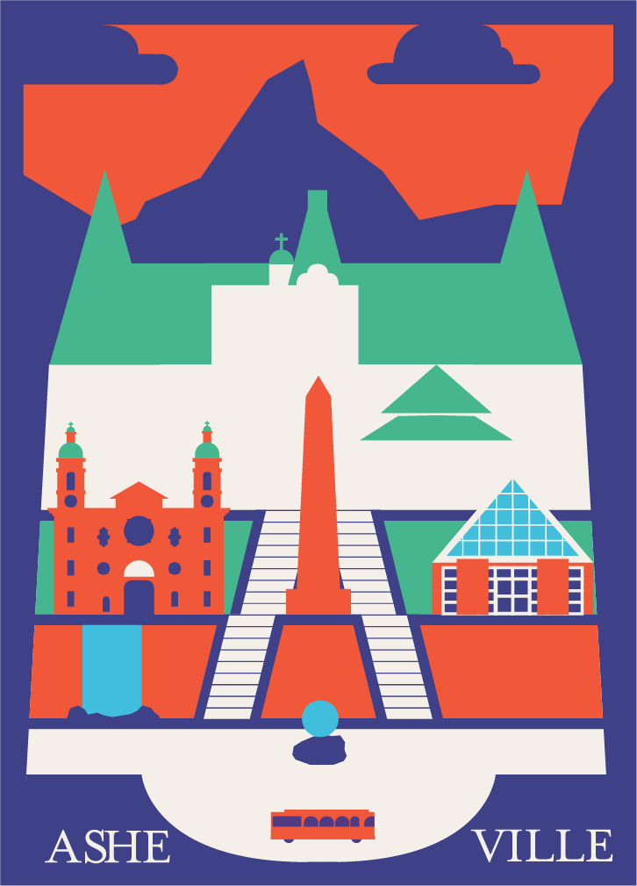

11" x 17", Intro to Computer Graphics
A vector poster designed for the city of Ashville, North Carolina. The assignment was to make a poster for a city of our choosing, either literally depicting it or representing it through significant details.
This was one of the earliest phieces of graphic design I ever made for college, and it went a good ways to informing my understanding of color usage and detail density. It features a number of major landmarks that I saw during a vacation I took there, including the ball outside of the Ashville Art Museum, the Vance Monument, the Bascilica of Saint Lawrence, and the Biltmore Estate.
Created in Illustrator.